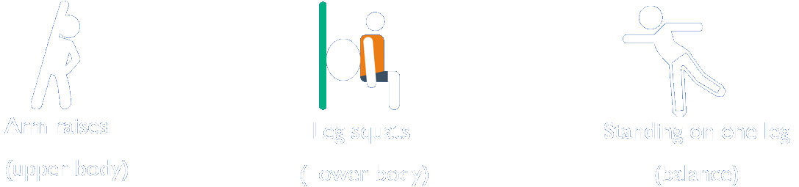

Muscle strength and the ability to balance are the building blocks that make up our physical function. Balance training is slightly different from muscle exercises. Whatever your age, good balance helps you to control your body’s movement. This could mean improving your reaction time to stay on your feet on an icy morning or simply strengthening your joints for day to day life.
What many people don’t realise is that good physical function requires working all the major muscle groups to strengthen the muscles. Muscles don’t work alone- they are often working together with your bones to give you strength and the good news is that impact activities also strengthen bone health. This becomes more important as we age when muscle and bone density start to decrease. Examples of muscle strength and balance activities include:

Muscle and balance is important to:
We have designed the application to deliver X “FlashCards” that have been developed by sports and exercise specialists. These provide a range of accessible activities that you can try at home at a time that suits you to keep up your muscle and balance activities.